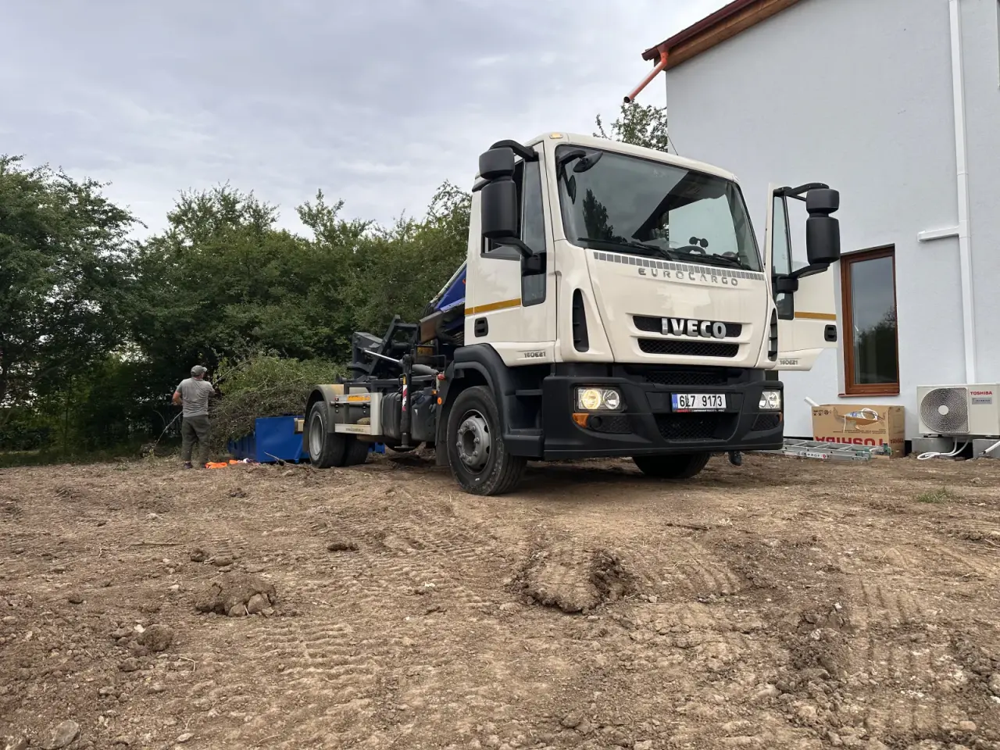
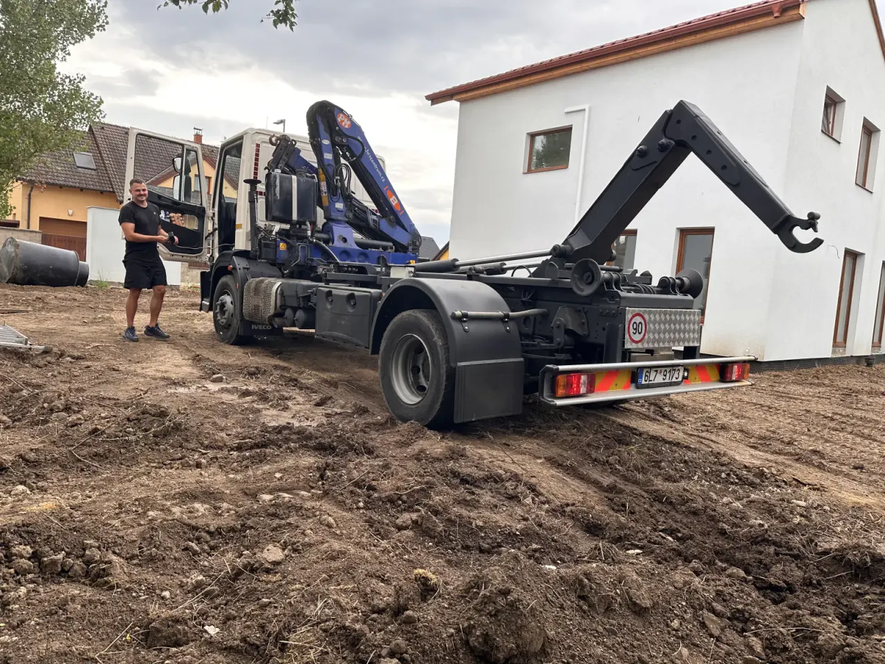

Real jobs and verification
Real dispatches, own equipment and a verifiable business
See a documented container-truck dispatch to a residential construction site. No invented review and no publication of the customer's exact address.
New job record
Container truck on a residential construction site
The photos show a real dispatch of the operator's own Iveco onto unpaved ground between two houses. Jobs like this depend on safe access, ground stability and enough room to position the truck and handle the container.
Photos from site
Access, equipment and working space
Each image shows a different practical part of the dispatch. The exact address and customer details are not published.

Access to siteThe operator's own truck is positioned directly on the residential construction site.
This view shows the kind of space and ground condition worth sending in a photo before booking.

Own equipment and crewThe operator's own truck arrives with a visible crew on site.
The photo shows the container body, hydraulic crane and crew working in the field.

Space between housesAccess, ground and surroundings are checked before positioning.
The rear view gives a realistic sense of the room the truck needs for safe work.
Quick facts
Reference policy in one answer
Kontejnerovka.cz publishes references and photos only when they are based on real jobs, verifiable reviews or customer-approved material. It does not use invented reviews or borrowed project photos.
- Useful reference: site type, access, equipment and visible conditions
- No fake names or exaggerated claims
- Google Business Profile is the verifiable review source
What makes a useful reference
A useful job example shows the site type, access situation and actual equipment. It does not need to reveal the customer's exact address.
What we do not publish
No fake customer names, invented praise, borrowed project photos or exaggerated claims such as "cheapest in Prague".
What will be added over time
More real job photos from served areas when there is a genuine source and the material is suitable for publication.
Photo value
Good photos explain the job
For container transport, photos are not decoration. They help customers understand truck access, container placement, waste type and the scale of the job.
Vehicle and container
Shows the real equipment and how much space placement may need.
Material
Clean rubble, soil, wood, green waste or mixed waste should be labelled honestly.
Local context
Local work in familiar towns is more useful than generic claims.